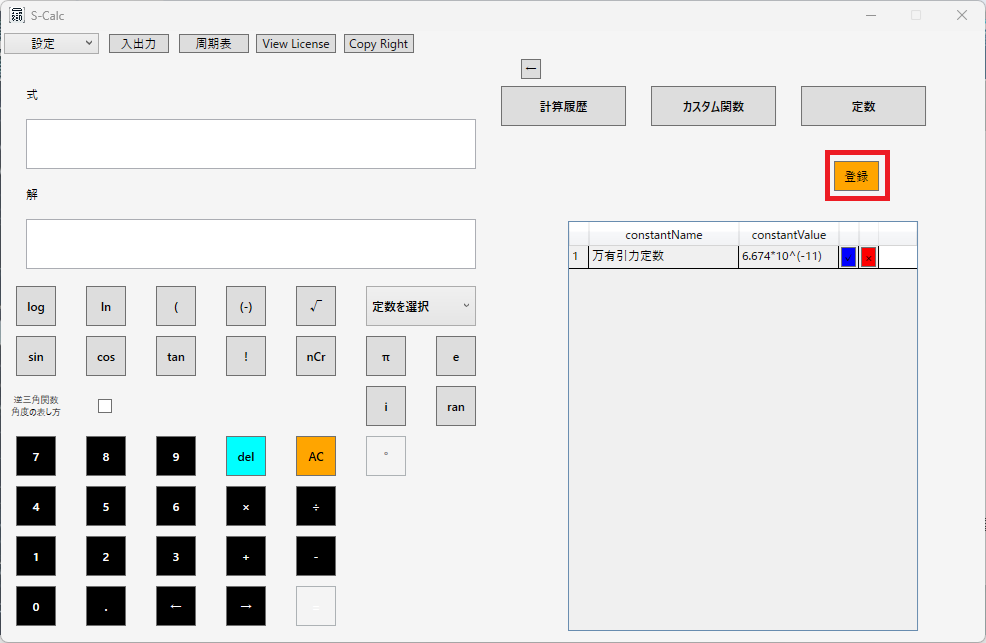
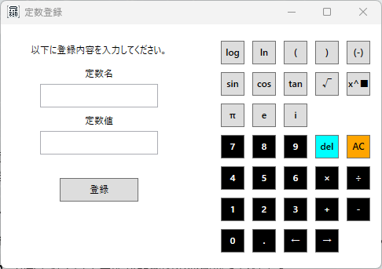
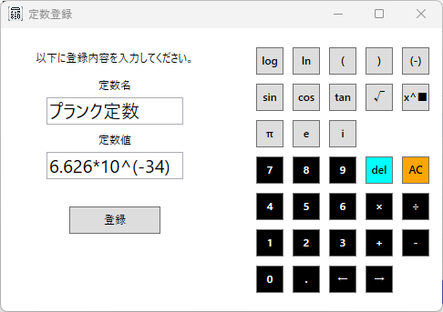
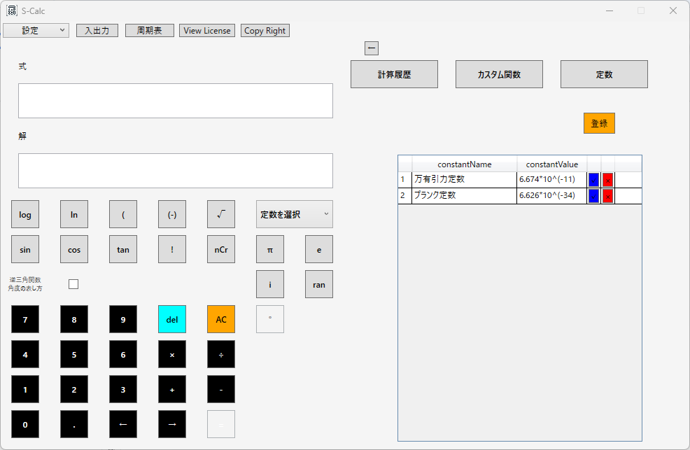
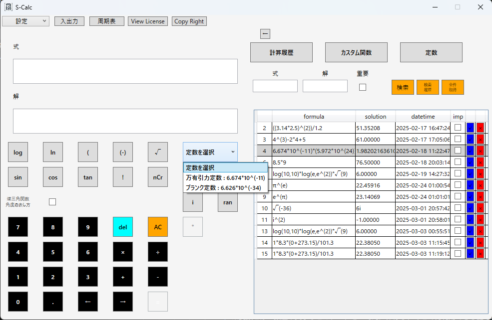
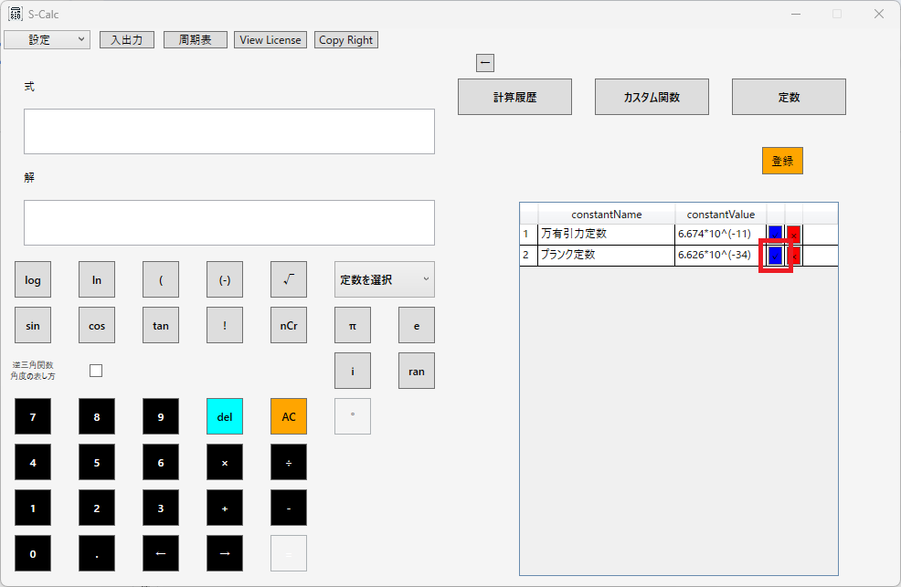
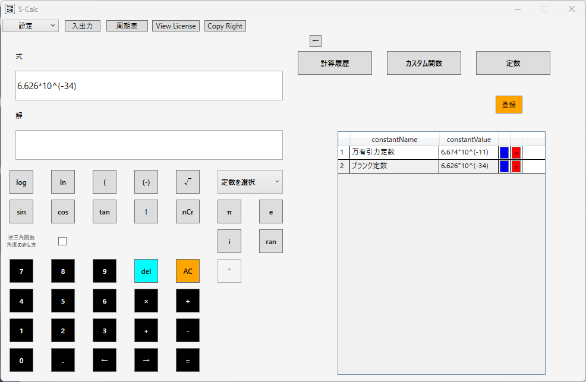
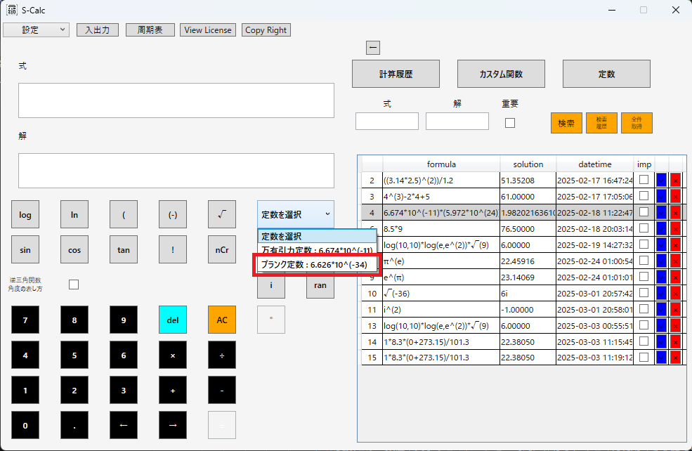
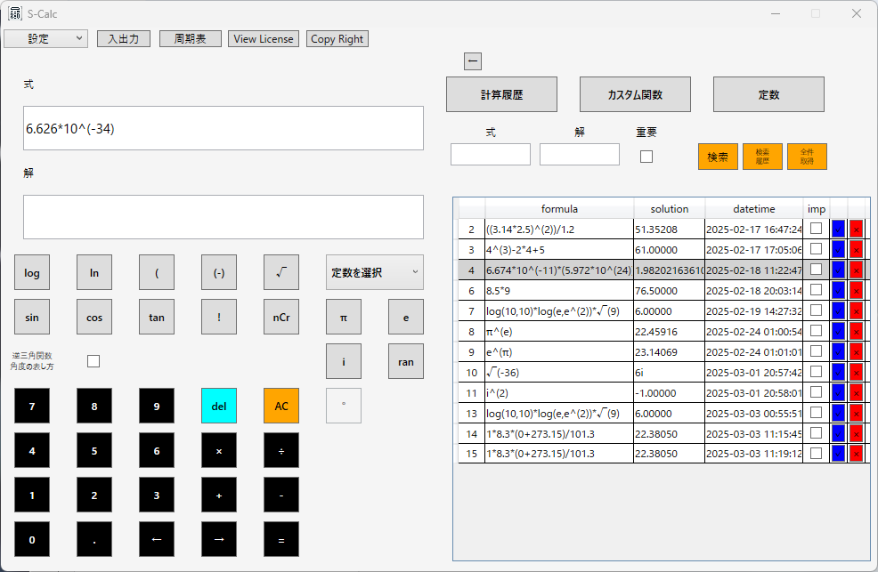

S-Calc 定数機能の活用
登録方法 使用方法登録方法

1.画面右の「定数」ボタンを押下して表示される「登録」ボタンを押下する。


2.表示されるダイアログに定数として登録したい情報を入力し、「登録」ボタンを押下する。

3.登録した定数データが画面右のグリッドに表示されていることを確認。

4.画面左のドロップダウンリストにも登録した定数データが表示されていることを確認。
使用方法


登録した定数が表示されているグリッドの青いボタンを押下することで、式テキストボックスに定数データが自動入力される。


定数グリッドが表示されていない状態においても、画面左側のドロップダウンリストから使用したい定数データを選択することで式テキストボックスに定数データが自動入力される。